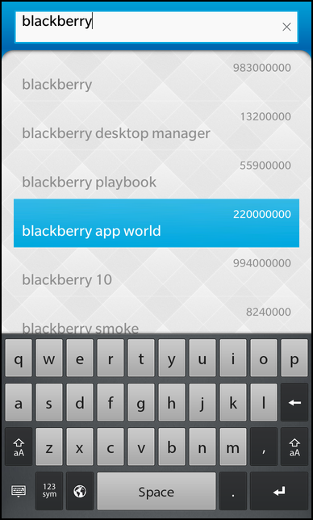

Files:
The Google Suggest example demonstrates how to use the QNetworkAccessManager class to obtain a list of suggestions from the Google search engine as the user types into a TextField.

The application makes use of the get function in QNetworkAccessManager to post a request and obtain the result of the search query sent to the Google search engine. The results returned are put into a ListView.
This example is built up by a TextField as the search box, and a ListView used to store the suggestions.
This class implements slots for various signals and a number of functions to display the search results and to determent when and how to perform the search.
class GoogleSuggest: public QObject { Q_OBJECT // This property is used to set the input text from the UI Q_PROPERTY(QString input READ input WRITE setInput NOTIFY inputChanged) // This property makes the model that contains the results available to the UI Q_PROPERTY(bb::cascades::DataModel* model READ model NOTIFY modelChanged) public: GoogleSuggest(); // The accessor methods for the properties QString input() const; void setInput(const QString &input); bb::cascades::DataModel* model() const; Q_SIGNALS: // The change notification signals of the properties void inputChanged(); void modelChanged(); // This signal is emitted to trigger the ListView to clear its selection void clearSelection(); private Q_SLOTS: // This method starts the actual query to the Google web service void autoSuggest(); // This method is called when the query provides new data void handleNetworkData(QNetworkReply *reply); // This method adds the parsed choices/hits information to the data model void showCompletions(const QStringList &choices, const QStringList &hits); private: // The data model that contains the choices/hits information mutable bb::cascades::QMapListDataModel m_model; // The network manager that handles the communication with the web service QNetworkAccessManager m_networkManager; // The time object to delay the start of the query QTimer m_timer; // The data the user has typed in QString m_input; };
The class connects to a TextField and uses a ListView to display the results. Both are defined in the QML. A QTimer controls the start of the network requests that are executed using a QNetworkAccessManager.
import bb.cascades 1.0
Page {
content: Container {
layout: DockLayout {}
ImageView {
layoutProperties: DockLayoutProperties {
horizontalAlignment: HorizontalAlignment.Fill
verticalAlignment: VerticalAlignment.Fill
}
imageSource: "asset:///images/background.png"
}
Container {
layoutProperties: DockLayoutProperties {
horizontalAlignment: HorizontalAlignment.Fill
verticalAlignment: VerticalAlignment.Fill
}
layout: StackLayout {
leftPadding: 30
topPadding: 20
rightPadding: 30
bottomPadding: 30
}
TextField {
id: search
text: ""
hintText: qsTr ("Search Google!")
// Inform the App object about the new input whenever the input text changes
onTextChanging: _app.input = text
}
ListView {
id: suggestions
topMargin: 10
dataModel: _app.model
listItemComponents: [
ListItemComponent {
type: ""
StandardListItem {
title: ListItemData.suggestion
status: ListItemData.hits
reserveImageSpace: false
}
}
]
// Connect the 'clearSelection' signal of the App object against the 'clearSelection' slot of the ListView
onCreationCompleted: _app.clearSelection.connect(suggestions.clearSelection)
}
}
}
}
We start by defining a constant c-string containing the URL to be used in the Google queries. This is the basis for the query. The letters typed into the search box will be added to the query to perform the search itself.
#include "googlesuggest.hpp" using namespace bb::cascades; const char *GSUGGEST_URL = "http://google.com/complete/search?output=toolbar&q=%1";
We start off by setting up the QML layout we'll be using. We also expose the class to the layout so we can access it from the QML. We do this with the setContextProperty method of QmlDocument.
We then set up the main scene which is created from our QML.
A single-shot QTimer is used to start the request when the user has stopped typing for 500 ms.
Finally, we connect the networkManagers finished() signal with the handleNetworkData() slot to handle the incoming data.
GoogleSuggest::GoogleSuggest() { QmlDocument *qml = QmlDocument::create("main.qml"); qml->setContextProperty("_app", this); AbstractPane *root = qml->createRootNode<AbstractPane>(); Application::instance()->setScene(root); // We use a timer that goes off after 500ms to trigger // actually retrieving the suggestions m_timer.setSingleShot(true); m_timer.setInterval(500); connect(&m_timer, SIGNAL(timeout()), this, SLOT(autoSuggest())); // Hook this signal so we get our network requests connect(&m_networkManager, SIGNAL(finished(QNetworkReply*)), this, SLOT(handleNetworkData(QNetworkReply*))); }
The showCompletion() function updates the data model connected to our ListView. It takes two QStringLists, one with the suggested search terms and the other with the corresponding number of hits.
void GoogleSuggest::showCompletions(const QStringList &choices, const QStringList &hits) { emit clearSelection(); m_model.clear(); if (choices.isEmpty() || (choices.count() != hits.count())) return; for (int i = 0; i < choices.count(); ++i) { QVariantMap item; item["suggestion"] = QString(choices[i]); item["hits"] = QString(hits[i]); m_model.append(item); } }
The autoSuggest() slot is called when the timer times out, and uses the text in the TextField to build the complete search query. The query is then passed to the QNetworkAccessManager's get() function to start the request.
void GoogleSuggest::autoSuggest() { if (m_input.isEmpty()) { m_model.clear(); return; } const QString url = QString::fromLatin1(GSUGGEST_URL).arg(m_input); m_networkManager.get(QNetworkRequest(url)); }
To extract the data from the reply we use the readAll() function, which is inherited from QIODevice and returns a QByteArray. Since this data is encoded in XML we can use a QXmlStreamReader to traverse the data and extract the search result as QStrings, which we can stream into two QStringLists used to populate the popup.
Finally, we schedule the QNetworkReply object for deletion using the deleteLater function.
void GoogleSuggest::handleNetworkData(QNetworkReply *networkReply) { if (!networkReply->error()) { QStringList choices; QStringList hits; const QByteArray response(networkReply->readAll()); QXmlStreamReader xml(response); while (!xml.atEnd()) { xml.readNext(); if (xml.tokenType() == QXmlStreamReader::StartElement) { if (xml.name() == "suggestion") { choices << xml.attributes().value("data").toString(); } else if (xml.name() == "num_queries") { hits << xml.attributes().value("int").toString(); } } } showCompletions(choices, hits); } networkReply->deleteLater(); }